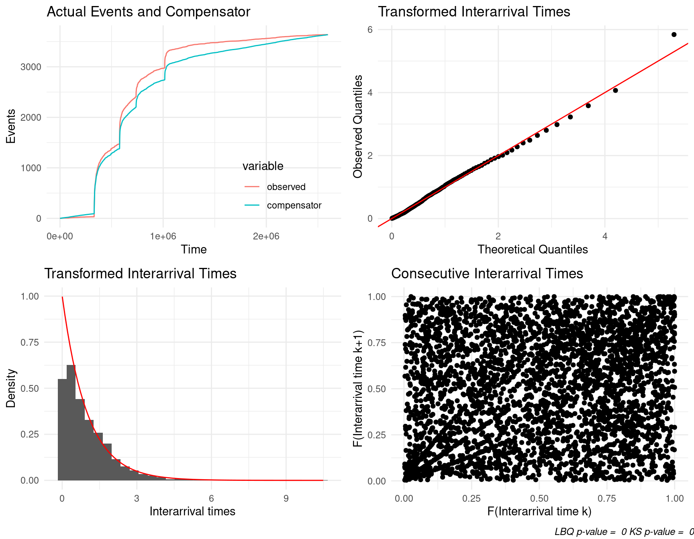

Chapter 1 Hawkes process
A univariate Hawkes process is defined to be a self-exciting temporal point process where the conditional intensity function is given by
\[\lambda(t)= \mu(t)+ \Sigma_{i:\tau_i<t}\nu(t-\tau_i)\] where where \(\mu(t)\) is the background rate of the process and \(\Sigma_{i:\tau_i<t}\nu(t-\tau_i)\) is some historic temporal dependence.
1.1 The fit_hawkes() function
## function (times, parameters, model = 1, marks = c(rep(1, length(times))),
## tmb_silent = TRUE, optim_silent = TRUE, ...)
## NULLRetweets
A NIWA scientist found a working USB in the scat of a leopard seal, they then tweeted about it in the hopes of finding its owner.
## [1] "2019-02-07 06:50:08 UTC" "2019-02-07 06:50:08 UTC"
## [3] "2019-02-07 06:49:22 UTC" "2019-02-07 06:48:48 UTC"
## [5] "2019-02-07 06:47:52 UTC" "2019-02-07 06:47:42 UTC"## numeric time stamps
times <- unique(sort(as.numeric(difftime(retweets_niwa ,min(retweets_niwa),units = "mins"))))
(#fig:plot hist)Observed counts of retweet times.
params <- c(mu = 9, alpha = 3, beta = 10)
## must have compiled TMB templates first use compile_stelfi()
fit <- fit_hawkes(times = times,parameters = params) ## Estimate Std. Error
## mu 0.06328099 0.017783908
## alpha 0.07596531 0.007777899
## beta 0.07911346 0.008109789

ETAS marked model
## origintime longitude latitude magnitude depth
## 1 2014-12-24 07:46:00 172.7133 -43.57944 3.208996 13.671875
## 2 2014-12-24 06:43:00 172.7204 -43.55752 4.109075 5.820312
## 3 2014-12-14 08:53:00 172.3641 -43.62563 3.240377 5.058594
## 4 2014-12-12 13:37:00 172.3680 -43.63492 4.459034 9.394531
## 5 2014-11-20 08:24:00 172.7836 -43.42493 3.116447 10.039062
## 6 2014-11-18 14:19:00 172.7936 -43.48970 3.158710 11.269531earthquakes <- earthquakes[order(earthquakes$origintime),]
earthquakes <- earthquakes[!duplicated(earthquakes$origintime),]
times <- earthquakes$origintime
times <- as.numeric(difftime(times , min(times), units = "mins"))
marks <- earthquakes$magnitude
params <- c(mu = 3, alpha = 0.05, beta = 1)
## must have compiled TMB templates first use compile_stelfi()
fit <- fit_hawkes(times = times, parameters = params, marks = marks) ## Warning: 2 external pointers will be removed## Estimate Std. Error
## mu 0.0002001766 1.206014e-05
## alpha 0.0005125373 2.934243e-05
## beta 0.0020558328 1.204552e-04
1.2 The fit_hawkes_cbf() function
## function (times, parameters, model = 1, marks = c(rep(1, length(times))),
## background, background_integral, background_parameters, background_min,
## tmb_silent = TRUE, optim_silent = TRUE)
## NULL